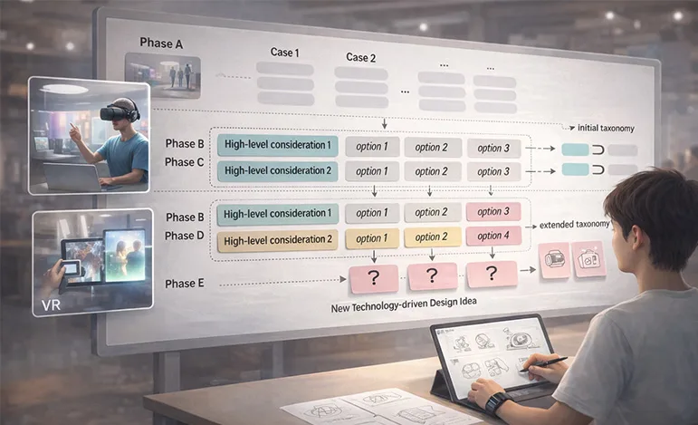

Frame the Right Questions
Look beyond the obvious problem, observe people and contexts carefully, and articulate questions worth pursuing.
I approach teaching as a collaborative design process in which students learn by observing closely, framing meaningful questions, and transforming research into tangible possibilities.
My courses connect critical reflection with project-based practice. I encourage students to work across culture, technology, and everyday experience; to test ideas through making; and to communicate design decisions with clarity and care.
The future needs designers who do more than respond to a given brief. I want students to become thoughtful researchers and responsible creators who can define meaningful problems, connect knowledge across disciplines, and turn emerging possibilities into experiences that matter.
Look beyond the obvious problem, observe people and contexts carefully, and articulate questions worth pursuing.
Bring together culture, technology, design, management, and social perspectives without losing depth or purpose.
Use prototyping as a way of thinking, learn through evidence, and revise ideas with openness and rigor.
Consider who benefits, who may be excluded, and how a design participates in wider social and cultural systems.
Introduces the relationships among culture, design, and management through lectures, field research, and project-based assignments.
Examines cities as cultural and designed environments, connecting urban observation with place-based design inquiry.
Investigates emerging issues in cultural industries and explores how changing technologies, audiences, and markets shape creative practice.
Guides students in framing research questions, selecting appropriate methods, and translating evidence into design opportunities.
Supports interdisciplinary capstone projects that integrate technology, artistic inquiry, and iterative design development.
Develops rigorous qualitative research skills for studying people, practices, experiences, and sociocultural contexts.
Explores innovation opportunities where digital intelligence, physical environments, products, and human activities converge.
Examines research and design approaches for intelligent, interactive systems grounded in human needs and emerging technologies.
Critically discusses current HCI and UX research issues through readings, case analysis, and research-driven dialogue.
| Year | Semester | Level | Code | Course Name | Memorable Unique Feature | Course Page |
|---|---|---|---|---|---|---|
| 2026 | Fall | Undergraduate | CDM1001 | Introduction to Culture and Design Management | Industry Project (Finnish Company), Design a custom AI Edu Toolkit (D:Branch) | — |
| 2026 | Fall | Undergraduate | CDM2008 | Design Research | Academic Paper Writing | — |
| 2026 | Spring | Undergraduate | CDM1001 | Introduction to Culture and Design Management | Incheon i-RISE Project, Urban Regeneration (화수부두지역) | — |
| 2026 | Spring | Undergraduate | CDM1011 | Design and City in Culture | 해외공동강의 w/ CUHK, Speculative Design & Exhibition Planning | — |
| 2026 | Spring | Undergraduate | TAP4001 | Techno-Art Capstone Project | Incheon i-RISE Project, Urban Regeneration (제물포 지역) | — |
| 2026 | Spring | Graduate | INV6202 | Qualitative Research Methodology | — | — |
| 2026 | Spring | Graduate | INV6291 | HCI & UX Design Research Issues | Proposed a HCI Landscape Framework for Education | — |
| 2025 | Fall | Undergraduate | CDM1001 | Introduction to Culture and Design Management | Book Writing Project <Social Impact through Art and Design> | — |
| 2025 | Fall | Undergraduate | CDM2006 | Contemporary Topics in Cultural Industry | Embodied Fashion with AR Tattoo | — |
| 2025 | Spring | Undergraduate | CDM1001 | Introduction to Culture and Design Management | Integrated Re-branding Project | — |
| 2025 | Spring | Undergraduate | CDM1011 | Design and City in Culture | 해외공동강의 w/ CUHK Hong Kong, Digital Exhibition Planning | — |
| 2025 | Spring | Undergraduate | TAP4001 | Techno-Art Capstone Project | — | — |
| 2025 | Spring | Graduate | INV6202 | Qualitative Research Methodology | — | — |
| 2024 | Fall | Undergraduate | CDM1001 | Introduction to Culture and Design Management | FC Lecture Initiated | — |
| 2024 | Fall | Undergraduate | CDM2006 | Contemporary Topics in Cultural Industry | — | — |
| 2024 | Fall | Graduate | INV6206 | Innovation in Digital-Physical Convergence | — | — |
| 2024 | Spring | Undergraduate | CDM1001 | Introduction to Culture and Design Management | FC Lecture | — |
| 2024 | Spring | Undergraduate | CDM1011 | Design and City in Culture | 해외공동강의 w/ CUHK Hong Kong | — |
| 2024 | Spring | Undergraduate | TAP4001 | Techno-Art Capstone Project | — | — |
| 2024 | Spring | Graduate | INV6202 | Qualitative Research Methodology | — | — |
| 2023 | Fall | Undergraduate | CDM2006 | Contemporary Topics in Cultural Industry | Proposed a new design education pedagogical method | — |
| 2023 | Fall | Undergraduate | CDM4008 | Social Innovation in Sustainability | Full design cycle project | — |
A growing archive of research-informed teaching initiatives I have developed to explore new approaches to convergence design education and improve students’ learning experiences.

To help technology-novice design students quickly connect emerging technologies with user experience, I developed and tested Designatomy—a taxonomy-guided ideation method for generating meaningful technology-driven service concepts.